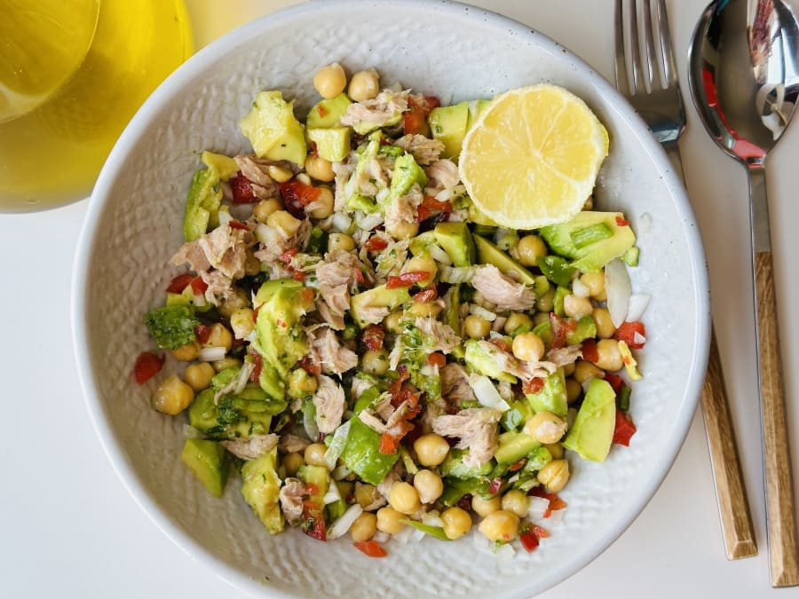

Ensalada fresca de garbanzos y atun

Si hoy no te apetece encender la cocina no tienes por qué hacerlo. Prepárate esta refrescante ensalada para comer, sólo tienes que cortar y mezclar. ¡Qué fácil!
Ingredientes
- Aguacate
- Cebolla
- Pimiento verde
- Pimiento rojo
- Perejil
- Limón
- Atún en conserva
- Garbanzo en conserva
- Aceite de oliva
- Sal
Pasos
- Pica muy finamente la cebolla y los pimientos.
- Escurre los garbanzos cocidos de su bote.
- Corta el aguacate en trozos.
- Vierte todo lo anterior en un recipiente. Añade el atún escurrido de su lata y mezcla.
- Aliña con un poco de aceite, limón, sal y perejil picado y ¡lista la ensalada!
Volver a Inicio